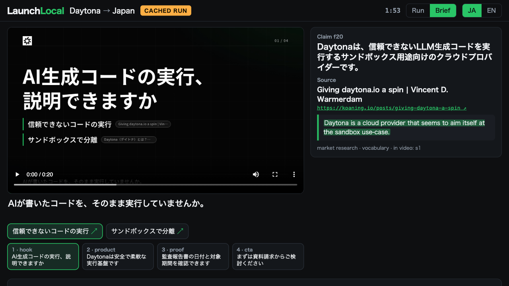
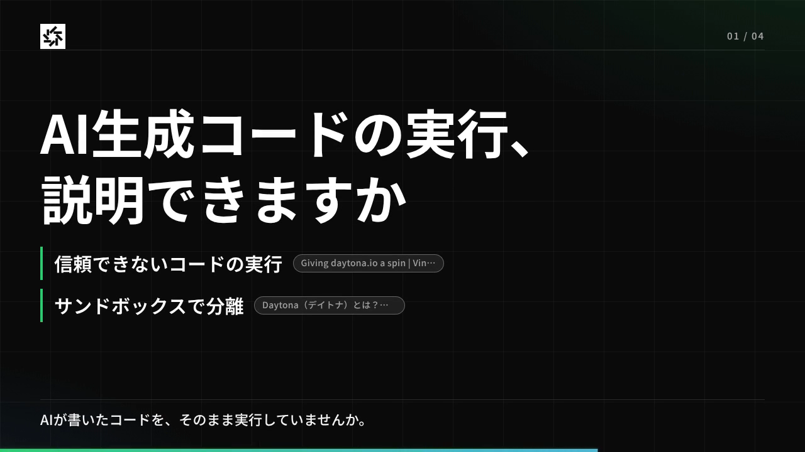
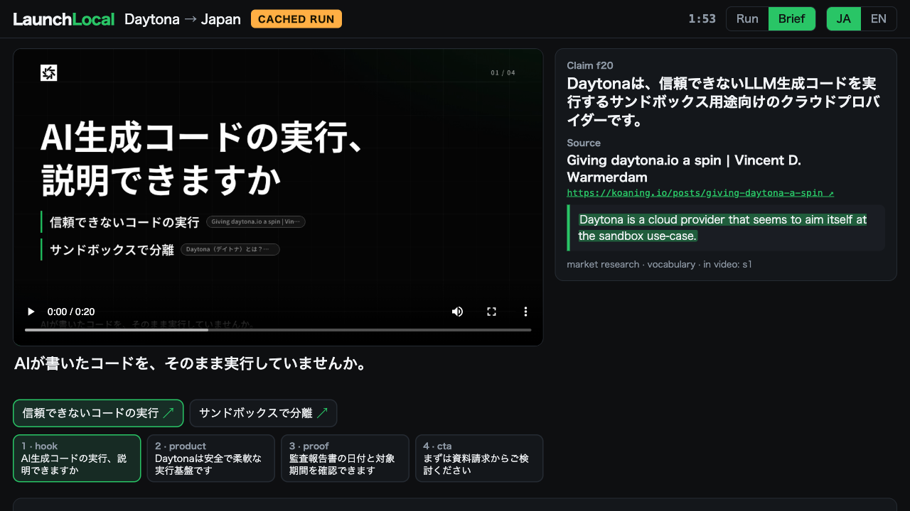
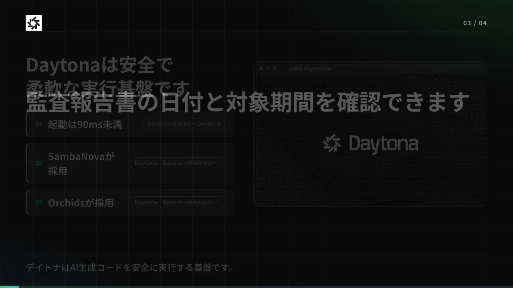
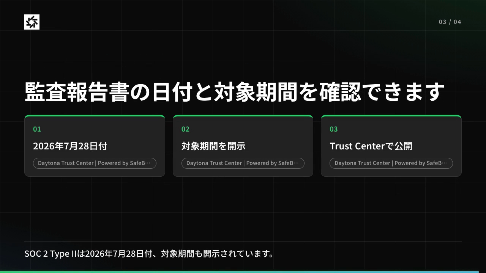
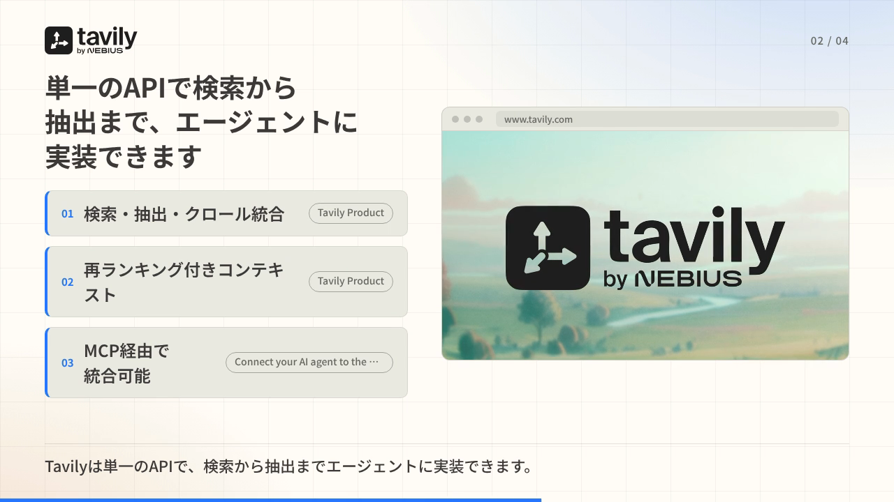

LaunchLocal. Paste a URL. Launch like a local.
Launch in Japan like a local company.
Paste your product URL and pick a market. Agents research your product and the local market, then write, voice and render a launch video in the local language and style, plus an interactive brief where every claim opens its source.
- 12 research agents per run
- About 40 sourced facts per run
- 80 to 100 seconds from URL to the first cut

LaunchLocal's own launch video, made by running LaunchLocal on this website. Until that run is published, this frame shows a screenshot of the app from a recorded run.
THE PROBLEM
Translation is not localization.
A company entering Japan usually translates its launch material. Local buyers expect more than a translation. They expect local proof, local tone and a local format. Getting those today means hiring a local agency and waiting.
Local proof
Buyers look for evidence from their own market: local customers, local pricing, local support and the compliance documents their company asks for.
Local tone
Business Japanese written from scratch reads differently from a translated English slogan. The script is written in the local language, not translated into it.
Local format
Each market has its own conventions for how a B2B product is presented. The market pack carries the copy rules and style rules for the video.
HOW IT WORKS
Six steps from a URL to a launch video.
The input is one URL. No brand guide, script or footage is needed. Brand colors, logo and images are read from your official site.
URL and market
You paste a product URL and pick a market. Japan is the default.
Research
12 agents run in parallel. 5 read the official site: brand, product, pricing, customers and docs. 7 search the local web using the areas in the market pack. Each fact keeps its source URL.
Script
A four-scene script is written in the local language: hook, product, proof and call to action. A sentence stays only if it cites a fact from the research.
Voice
A Kokoro text-to-speech model on a GPU narrates each scene in the local language.
Brand theme and render
A coding agent writes a stylesheet that makes the video look like your official site. A sandbox renders the composition to MP4.
Local buyer gate
An agent playing a local buyer approves or rejects the cut. If it rejects, the script is revised and a second cut is made.
Measured on the build day: about 80 to 100 seconds from URL to the first cut, and about 115 to 140 seconds when the buyer agent rejects cut 1 and a second cut is made.
WHAT YOU GET
A video, a brief you can check, and a list of gaps.

The launch video
Four scenes, about 25 seconds, with narration in the local language. Styled from your own site's colors and logo.

The interactive brief
Every claim in the video is listed. Clicking a claim opens its source, so a reviewer can check it before the video is used.
What a local buyer will still ask for
The buyer agent lists the evidence it could not find, such as local proof that only you can provide. These gaps are in the brief.



Recorded runs exist for daytona.io, tavily.com, nosana.com and agentfield.ai. See the recorded runs.
LOCAL BUYER GATE
The cut is reviewed by a local buyer, not by its author.
An agent plays a local buyer from the market pack. For Japan it is the head of IT at a large enterprise, reviewing the video as a ringi approval: the internal sign-off a Japanese company uses before it buys. The buyer scores the questions listed in the market pack and then approves or rejects the cut.
The gate allows one revision. Cut 2 is final whether or not it is approved.
approveThe cut answers the buyer's questions. It is the final video.
rejectA sourced fact that the script did not use would fix the concern. The script is revised with the buyer's reasons, and cut 2 is voiced and rendered.
approve_with_gapsThe video already uses the evidence that exists. What is missing is for the vendor to provide, and it is listed in the brief.
ARCHITECTURE
Built with partner technology
Each stage runs as its own node. Each partner does one job that the product needs.

- AgentField
- Control plane. Runs each pipeline stage as its own node and shows the workflow graph.
- CodeAF
- Coding harness that writes the video's brand theme, a stylesheet that makes the video look like the official site.
- Tavily
- Map, extract and search for the 12 research agents.
- Daytona
- Sandbox that renders the video composition to MP4.
- Nosana
- GPU deployment for the voice model, and hosted inference for text when its catalog lists a chat model.
CREDITS
Open source we build on
LaunchLocal was built in one afternoon. That was possible because of these projects.
Agents
- AgentField: agent control plane.
- CodeAF: coding harness.
Video
- Hyperframes: HTML compositions rendered to MP4.
- GSAP: animation timeline.
- FFmpeg: encodes the video and audio.
- Chrome Headless Shell: draws each frame.
Voice
- Kokoro: text-to-speech model.
- Kokoro-FastAPI: the server image on the Nosana GPU.
- kokoro-onnx and misaki: local fallback.
Type
- Noto Sans JP: the typeface in the Japanese video.
App
- FastAPI and Uvicorn: the web app and its server.
- httpx: HTTP client.
- OpenAI Python SDK: used against OpenAI-compatible endpoints.
- tavily-python: Tavily client.
- Daytona Python SDK: sandbox client.
- uv: Python packaging.
- qrcode.js: QR code for the result page.
Inspiration
- The /brag agent skill (latent-spaces/brag).
- LaunchCut: a past Daytona hackathon project.
HONEST BY DESIGN
The video says only what a source says.
- Unsourced sentences are dropped. Every sentence in the video cites a fact from the research. A sentence with no fact behind it is removed, not rewritten.
- Numbers are copied from sources. A number or price in the script must appear in the source it cites.
- Cached runs are labelled. A recorded run replayed in the browser shows a "CACHED RUN" badge.
- Fallbacks are logged. Each external service has a named fallback, and the run log records when one is used.
Known limits
The source check confirms that each sentence cites an existing fact and that its numbers appear in the source. It does not check that the source fully supports the wording. That is why the brief exists: a person can open each source and decide.
The video has four scenes. The buyer gate allows one revision.
MARKETS
A market is one JSON file.
A market pack sets the language, the voice, the local sites to search, the research areas, the copy and style rules, and the buyer persona. Two packs exist today.
International product to Japan
The default. Research covers local competitors, local pricing, vocabulary, trust and compliance, existing local presence, marketing style and current news. The script is in business Japanese.
Japanese product to global
The reverse pack. It launches a Japanese product globally in English.
A new market
Copy an existing pack and edit it. The app lists every file in the packs folder, so the new market appears in the picker without code changes. How to add a pack.
LINKS
Slides and source code
LaunchLocal was built in one afternoon at the Agent Forge AI Hackathon Tokyo on 14 November 2026. The code is public.